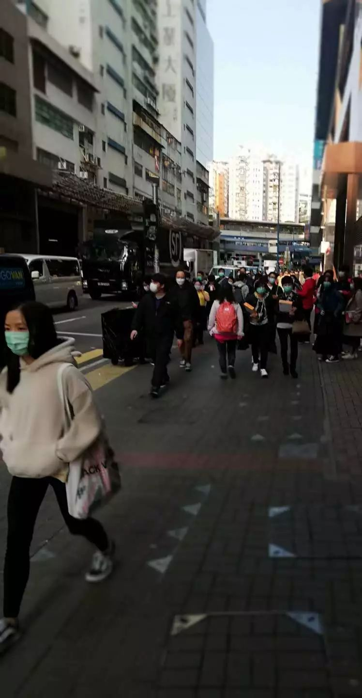
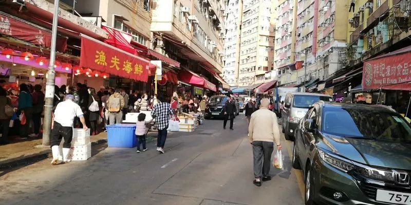
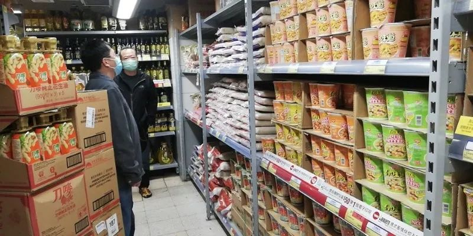
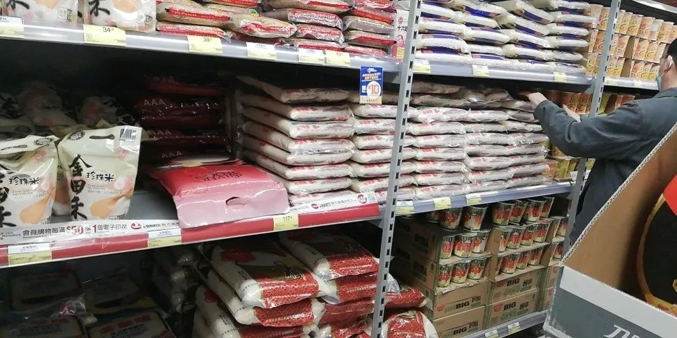
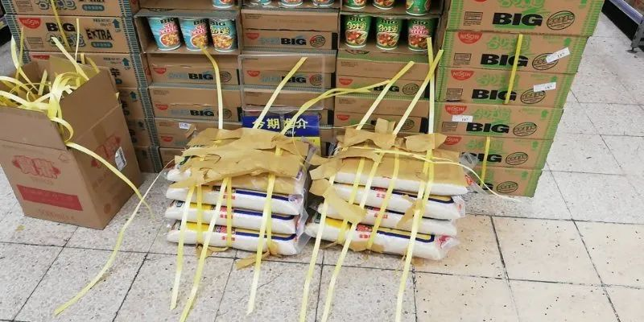
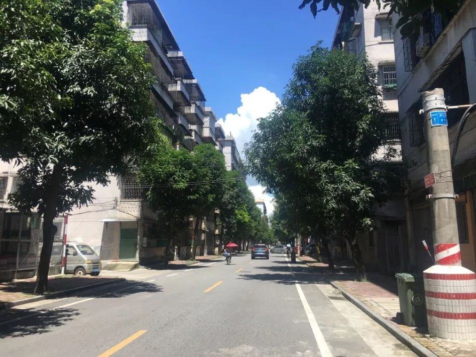
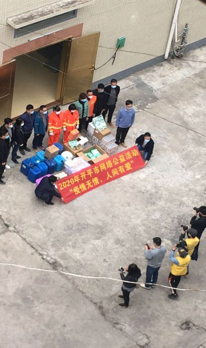
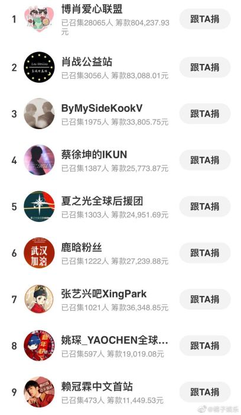

口述 | 公益人周健：怎样更实在地帮助抗疫中的英雄们
原文链接 备份链接 做公益，只凭“鸡血”“热情”，这是不行的。 口述 | 周健（北京感恩公益基金会理事长） 整理 | 王煜 这些天以来，许多事情让我非常揪心。 湖南衡山县的乡镇医生宋英杰，连续十几天在抗疫岗位上工作，过劳去世，因公殉职时 …
总体而言，港人对待疫情，后来就没有内地那么紧张了。我妈妈讲，她觉得作为一个香港居民，自己最大的感受是彷徨。她抱怨道，在香港，没工开等于没饭吃了；公司起先通知放假到24号，何时复工再议，而现在仍然是等通知的状态。
口述 | 岑雅茵
整理 | 孔冰欣
岑雅茵，香港居民，深圳大学新闻传播学院新闻系本科三年级学生
2月初的时候，香港的“疯狂”程度或甚于内地
于我而言，这场疫情，比较“慢热”。
我是深圳大学传播学院新闻系的一名大三学生，祖籍广东江门开平，现在已成了香港居民。记得2019年12月29日，我从学校返港；2020年1月12日，又从香港回到江门。此后至今，我便一直“滞留”老家开平。
春节前在香港的那段时间，我继续做我的兼职工作。当时，我只从新闻、微博上简单了解到武汉出现了新冠肺炎的消息，且微信朋友圈里也没所谓“大疫来袭”的氛围体验，因此并不十分在意病毒可能会带来如何严重的影响，反而觉得，相隔有些距离，应该是没大问题的。而在我做兼职的公司里，偶尔听到同事们有讨论，大抵也就说说希望疫情不要继续扩散、不要蔓延到香港，都认为没什么需要特别担心的。那时候的香港，至少从新闻报道上看，还没有新冠肺炎的病例，所以我回开平前，同事们心情尚比较放松，还半开玩笑地提醒我，“小心点，别把病毒带回来”。
当疫情逐渐蔓延至广东省时，开平的人们起初依旧不以为意，据我观察，街上戴口罩者仍为少数。我的许多同学则在朋友圈吐槽，他们劝告家里长辈出门要戴口罩，偏偏长辈认为这是小题大做，何必如此忧虑呢？好在，我家人理性，倒是听劝的。
直到江门出现了第一例病例，口罩、消毒液、洗手液等脱销了，开平的人们才“后知后觉”，如临大敌起来。2月初，开平出现了第一例。这个时候，已经很难买到大量的口罩、消毒用品。走在街上，我体会到了一种压抑之感——人来人往，几乎没有不戴口罩的。各大药店网上预约口罩，甚至到了“抢”的地步，比粉丝争夺爱豆演唱会的门票还夸张。开平这第一例，更造成我朋友圈的刷屏，全部都是关于这例病人的各路消息和相关活动路径，态度清一色痛心疾首——开平这一方不易的“净土”，竟也被“污染”了！
与此同时，据我在港的亲友反映，2月初，香港的“疯狂”程度或甚于内地，为了买口罩，排队的人群足足蜿蜒好几条街——唉，以前是蒙上面罩抢钱，如今是揣上钱包抢口罩了……尽管香港官方称物资不缺，但是在大大小小的商场、超市里，别说口罩了，凡是带有“消毒”字眼的商品都买不到，粮食、方便面、纸巾、油盐甚至卫生巾都完全被抢购一空。像我妈妈一大早就起来去买大米，无果，家里惟余存货，众人苦不堪言。
我家在观塘区，据我爸爸说，像观塘这类香港比较老旧的区域，月初市民哄抢的情况较为普遍。他跑到九龙湾的淘大商场去转了转，发现那边就没有哄抢、相对“平静”。而令我奇怪的是，菜市场里、私人店家里的粮油、纸巾等物资，不知何故乏人问津。当然，随着疫情渐渐得到控制，观塘区现在的物资供应，已能满足百姓需求，只是口罩依然紧俏。
总体而言，港人对待疫情，后来就没有内地那么紧张了。街上虽有90%的人都戴着口罩，但照样出门，不至于像内地，闭门不出。
岑爸爸拍了一段观塘某站点后面大街的短视频。他在视频里用开平话说的是：这里是开源道，依旧人来人往



岑爸爸在观塘的家附近拍的照片



附近的菜市场



百佳超市。从照片上看，物资供应，能满足当地百姓需求
不过，影响肯定是有的。我妈妈讲，她觉得作为一个香港居民，自己最大的感受是彷徨。她抱怨道，在香港，没工开等于没饭吃了；公司起先通知放假到24号，何时复工再议，而现在仍然是等通知的状态。延缓开工的确能减少人与人的接触，避免传染加剧，可是一些生意差的小公司，已经面临几近倒闭的危机。去年暴徒作乱之时，我就听妈妈说，她公司的一些分店生意惨淡，现疫情“雪上加霜”，若生意再无起色，那些分店关门大吉亦不无可能。
我们学校定在3月9日起开网课，预计4月正式入学。但是，学校也有说要做好延长线上教学的准备。我爸妈觉得，开平也许比香港更加安全，因此不急着催我返还。毕竟，香港人流多且杂，你不知道下一秒从你身边走过的是哪里人，危险系数或更大。何况，在香港的家里还没装WiFi，不利于上网课。此外，港班车客运全市暂停，搭乘高铁亦有点担心，客运交通上也存在诸多不便。
现在我还没有找到对香港的“归属感”
我的外公外婆住在香港，妈妈具备申请移居的资质。我读初中之前，妈妈获得了香港居民的身份，此后，因为超龄子女赴港定居的政策，她开始着手操办爸爸、我、弟弟的移居事宜。我一直在开平生活，到2017年2月，我们三人的移居申请也有了结果，于是就全家搬到香港了。实际上，在开平当地，不少家庭都是这样子搬到香港去的。
开平民风淳朴，侨乡风情，令我拥有一种自豪感。目前，爷爷奶奶依旧驻守开平，每年春节，我们一家都会回到开平过年。我觉得，内地这边“年味”更足，每至除夕，家人买好花、年桔、春联等，屋内布置一新；而我们在香港的房子，因为空间有限，所以这些东西、这套流程，也就不弄了。
一转眼，移居香港已经三年多。在港生活，除了居住空间小了些，其它方面还蛮不错。然而，我还没有找到对香港的“归属感”，毕竟，我在内地长大，赴港时日短，和当地社会接触不多。据说，疫情未散，眼下香港仍有游行示威的、暴动的，“港独”并没消停。我弟弟原来的班级里，也有“港独”倾向的人，显得排斥移民，不过，最近这一年以来，他换了班级，觉得风气有所改善。其实，并非所有香港居民都是暴徒，希望内地的朋友，不要误解。
因我人在开平，所以最后想继续接着说说开平的景况。出现首例病例后不久，全市客运站的港班车客运就完全停运了。2月4日到9日，“开平市肺炎疫情防控指挥部”发布了全市范围内所有餐饮服务行业暂停营业的通知。2月8日开始，从江门地区以外返回开平的本地居民或外来人员，都要在1小时内主动向居住地所属居委会或自行上网进行报告登记。11日开始，各大药店加大了口罩的供应，可依然需要先在网上预约才能前往线下门店购买。那几天，开平的朋友们在朋友圈疯转口罩的相关信息。
疫情期间，开平的商场也是有营业的。据我了解，开平一些旧城区并没有采取“购买物资限制出入人数”的做法，但有一些区域（如长沙街道办）就规定上班需要通行证，且每户两天仅限一人外出，大大小小的住宅区都规定非该住宅区内的住户、汽车等都禁止入内。

开平的家附近一览

从居民的角度，这样的做法不能说对日常生活全无干扰。以细节为例：每个人购买物资实受限制，如果这时家中能多出一人助力，即可多买一份。其次，工作也是一个问题，没有复工，就意味着没有收入、在家空等，对一些经济条件较为困难的家庭真是不小的打击。
目前，开平唯一病例业已治愈，一些餐饮服务行业慢慢恢复营业了，但多数还是以外卖为主。按我之前外出采买之见闻，街上行人多起来了，口罩虽仍需网上预约，但货源充足，你手速快些，总能买到。对于老人，则提供电话预约，这点考虑得还是比较人性化的。
我独自一人宅在家里，主要的娱乐方式就是煲剧、看电影、听听音乐、玩游戏、看书，增进厨艺等。因为不和爷爷奶奶住在一起，须“自力更生”，所以这段时间我的厨艺突飞猛进——当然，爷爷也会时不时地，给我带些肉类、蔬菜过来。
大门不出，自给自足
各地的救助捐款让我倍受触动。下图就是我在家里阳台上往下拍的照片，我家楼下是街道卫生办，这天我恰好看到了网络捐献的公益活动在进行拍照认证。不仅如此，很多国外的开平华侨，积极捐献物资给江门。另外，我很感谢各小区体温测量点物业人员的付出，对我们居民来说，只是停留几秒钟，而他们却是长时间不分昼夜地守在一块地方，辛苦。

作为一个追星女孩（追星女孩不一定混饭圈，但饭圈的风风雨雨我也是一路见证的），我在微博看到，此次饭圈女孩尽自己的绵薄之力救助疫区，比如“鹿晗吧_LuhanBar”已经联合捐赠了十五批物资，好！你首先是个中国人，然后才是饭圈女孩；用最炽热的心去追星，也用最热血的心去做公益。公益面前无饭圈，平时追星的女孩们，在大是大非上绝不含糊。我认为粉丝圈也该成为传递正能量的地方，不管是谁的粉丝，不管以往是否互撕过，如今都有一个共同的偶像，都有一个共同的愿望：阿中哥哥加油！大家都要平平安安地度过这轮疫情！

（图片由受访者提供）

征集令
《新民周刊》现面向全国征集新冠肺炎采访对象和真实故事：
如果你是参与抗击新冠肺炎疫情的医护人员或其家属，我们希望聆听你的“战疫”故事，也希望传达你的诉求。
如果你是确诊、疑似患者本人或家属，我们希望了解你和家人如何“抗疫”的过程，让外界了解你的真实经历。
如果你是疫情严重地区的普通市民，我们希望展现你的乐观，并倾听你所需的帮助。
如果你是公共服务人员或各类捐助者，我们希望看到你的“最美逆行”，记录下你的无私。
……
抗击新冠肺炎疫情，我们诚征对疫情了解的社会各界人士，提供相关线索，说出你的故事，让我们用新闻留存这一切。
《新民周刊》新冠肺炎线索征集值班编辑联系方式（添加时请简要自我介绍）：
周一：应 琛 微信号：paulineying0127
周二：金 姬 微信号：gepetta
周三：黄 祺 微信号：shewen-2020
周四：周 洁 微信号：asyouasyou
周五：孔冰欣 微信号：kbx875055141
周六：吴 雪 微信号：shyshine1105
周日：姜浩峰 微信号：jianggeladandong
✳如你需要捐赠物资，可与以下两位工作人员联系:王勇：WangYong-SH 吴轶君：rommy150708（添加时请注明“捐物资”，方便工作人员快速通过您的申请，谢谢。）
新闻是历史的底稿，你们是历史的见证者。期待你的故事、你的线索！

▼
大家还都在看这些
▼
新民周刊所有平台稿件， 未经正式授权
一律不得转载、出版、改编
或进行与新民周刊版权相关的其他行为，违者必究


原文链接 备份链接 做公益，只凭“鸡血”“热情”，这是不行的。 口述 | 周健（北京感恩公益基金会理事长） 整理 | 王煜 这些天以来，许多事情让我非常揪心。 湖南衡山县的乡镇医生宋英杰，连续十几天在抗疫岗位上工作，过劳去世，因公殉职时 …
原文链接 备份链接 疫情危机再一次提醒我们，在公共卫生方面，从政府、社会到公众，我们还有很多功课未能完成。 作者 | 朱纪明 程峰（清华大学医学院公共健康研究中心） 编辑 | 徐菁菁 药物和疫苗不一定“特效” 身在疫情中，大众的期待是特效 …
原文链接 备份链接 距新型冠状肺炎疫情公开已经过去二十多天了，从最初的混乱和恐慌至今，人们似乎在一点点变得平静。生活的节奏被打乱，取而代之的是对 “非正常状态” 的逐渐习惯。对很多参与在捐助行动里的人也是，紧张感从没消失，只是变得可以适 …
原文链接 备份链接 对SARS毫无印象的我，倒不太担心此次新冠肺炎疫情……我更希望的是这场肺炎疫情能够赶快结束，倒不是因为每天在家的诸多不便，而是我担心这样下去会影响到中国乃至世界经济。 口述 | Philippe Régnier …
原文链接 备份链接 澎湃新闻记者 何利权 实习生 粟满莺 李佳悦 因缺乏物资，都安县医护人员自制防护用品。 因新冠肺炎确诊患者在短期内陡增，且感染人数占到所在市（州）的绝大部分，个别位置偏僻的贫困县正面临着一场艰难的“战疫”。 截至2 …